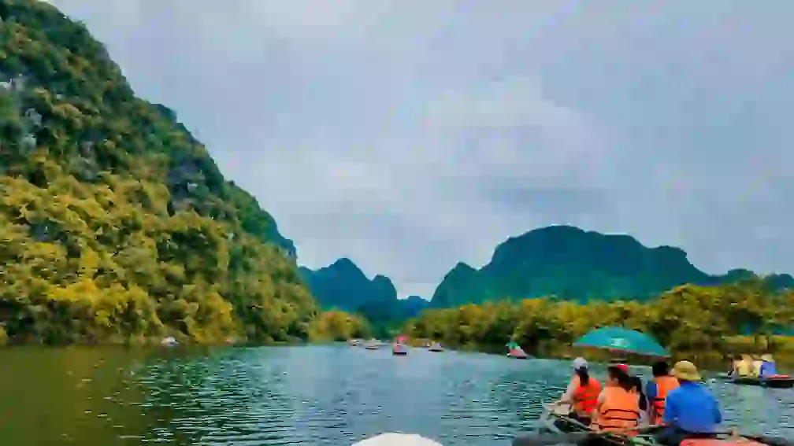
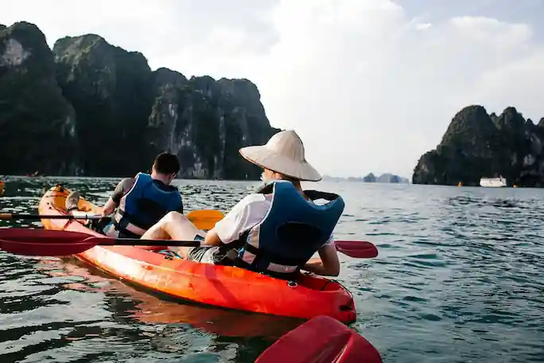

Family Fun Float
Perfect for beginners and families with young children (ages 5+).
Enjoy gentle rapids, beautiful scenery, and plenty of opportunities
for swimming and wildlife spotting. A relaxing introduction to the
joys of river rafting. Duration: Half-day (approx. 3 hours).

Canyon Overnight Expedition
Immerse yourself in nature with our multi-day expedition. Experience
varied rapids, explore side canyons, enjoy campfire meals, and sleep
under the stars. All camping gear and meals provided. A truly
unforgettable wilderness adventure (ages 16+). Duration: 2 days / 1
night.